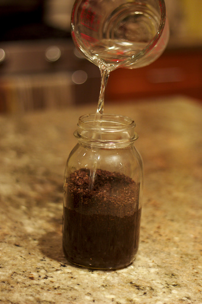

How to Make a Cold Brew
1 / 5
 1. Coffee beans must be ground in order to make your coffee.
1. Coffee beans must be ground in order to make your coffee.
2 / 5

2. Water should be poured into the ground coffee beans to create the mixture.
3 / 5
 3. The coffee must drip for 12-24 hours through a special filter.
3. The coffee must drip for 12-24 hours through a special filter.
4 / 5
 4. Put the coffee in the fridge overnight.
4. Put the coffee in the fridge overnight.
 5. Serve the coffee over ice.
5. Serve the coffee over ice.